#
CurseForge
This page pertains to Minecraft: Java Edition.
CurseForge is a large mod/plugin repository and launcher used by popular modpacks.
#
Windows (CurseForge App)
Jump to
#
Prerequisities
#
Installing
- Download CurseForge and run the installer.
Standard (Overwolf) Standalone
- Launch CurseForge. If you have Minecraft: Java Edition preinstalled, it should automatically detect your installation.
You can manually set your Minecraft modding folder under Settings > Game Specific > Add > Minecraft > Minecraft (Java Edition).
By default, CurseForge creates this new folder under your system drive, replacing <your_name> with the name of your user folder. Select Advanced if you wish to change this location.
C:\Users\<your_name>\curseforge\minecraft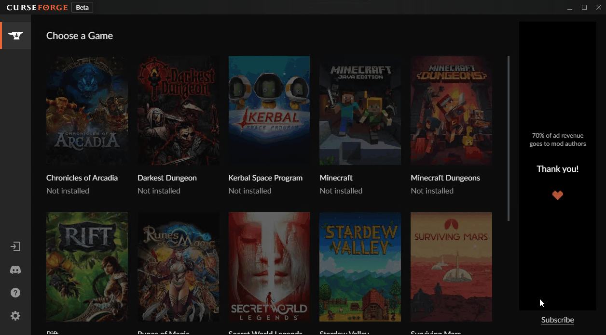
#
Downloading Modpacks
Modpacks can be installed by browsing the CurseForge website or using the CurseForge app.
- Launch the CurseForge website for Minecraft modpacks.
- Install modpacks using the Install button. It should automatically launch in CurseForge and begin installation.
- Alternatively, you can specify a specific or older version of a modpack by clicking on the modpack's details > Files.
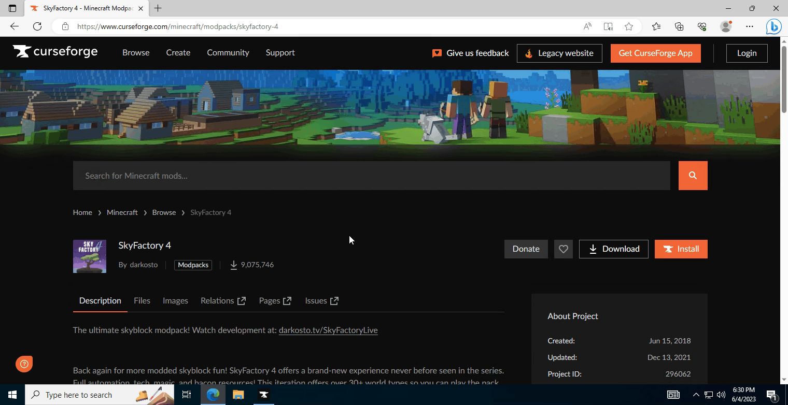
- In the left sidebar, select Minecraft > Browse Modpacks. Modpacks can be installed using the Install button.
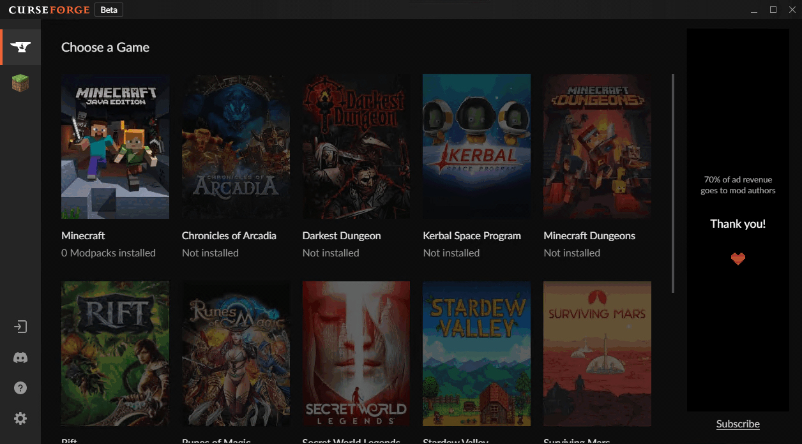
- Alternatively, you can specify a specific or older version of a modpack by clicking on the modpack's details > Versions.
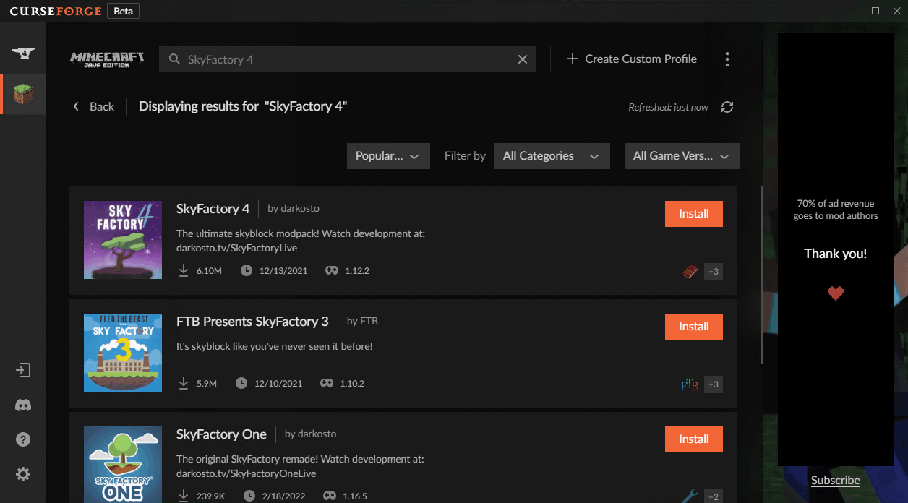
#
Downloading Extra Mods
- Download the mod(s) and save them to an accessible directory.
- Locate your Minecraft installation folder. In the CurseForge app, this can be found under Minecraft > My Modpacks. Find your modpack, then right-click and select Open Folder.
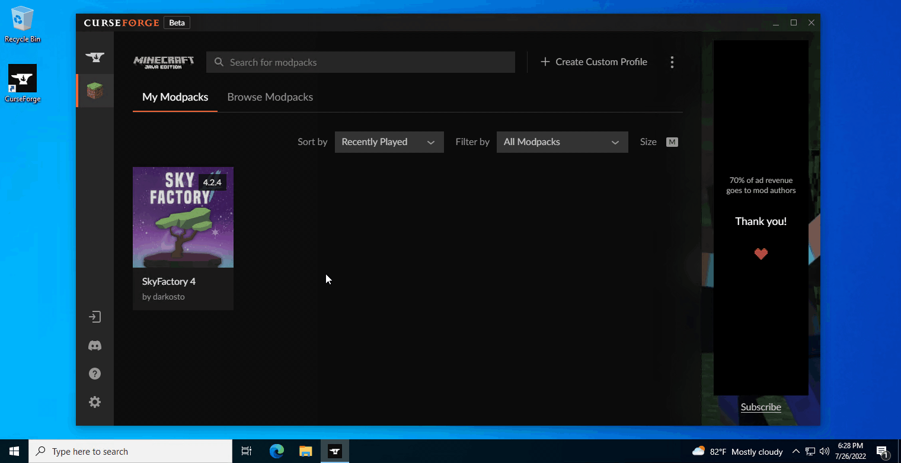
- Navigate to
mods, then drag or paste in the downloaded mods.
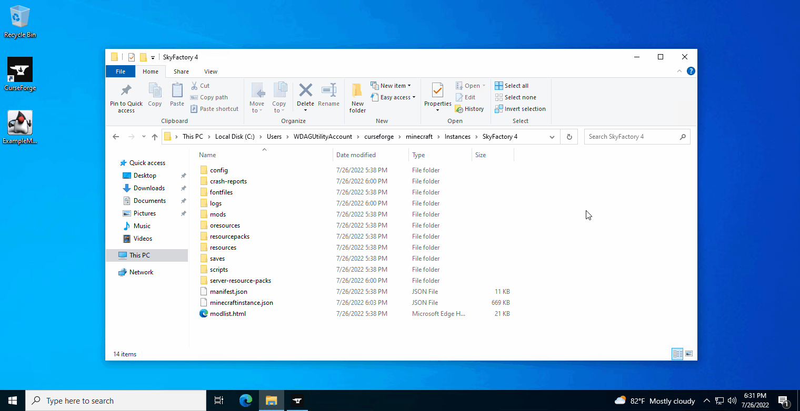
- Launch the game, or relaunch if it is currently open.
#
Adding Profiles
By default, CurseForge will automatically make profiles for your modpacks.
- In the launcher, go to Minecraft > My Modpacks. Hover your mouse over the modpack you want to launch and press Play.
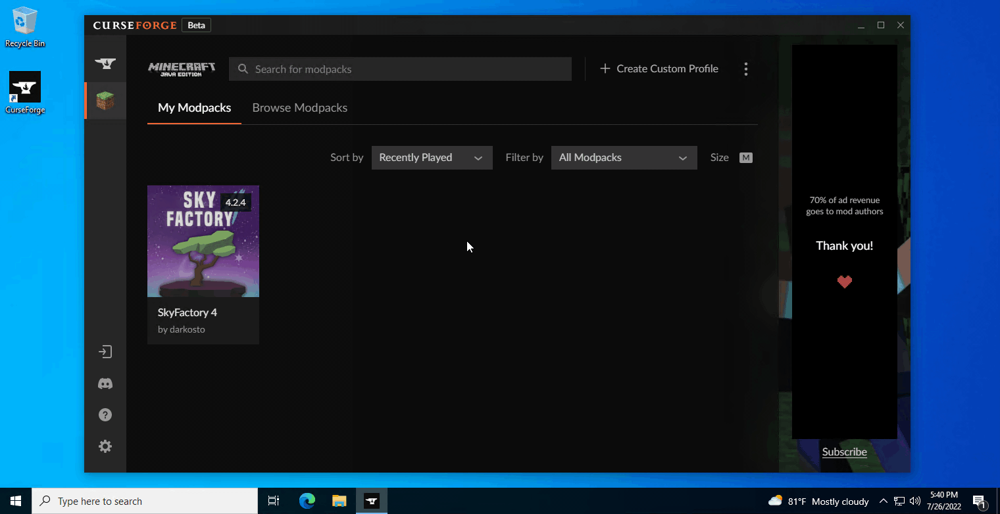
SKLauncher can automatically create profiles while allowing you to launch from CurseForge. You only need to set this up once for the launcher to work with any future modpacks.
- Download the SKLauncher executable and save it to a directory.
- Locate the Minecraft mod folder created by CurseForge and navigate to
Install.
By default, CurseForge creates this new folder under your system drive, replacing <your_name> with the name of your user folder.
C:\Users\<your_name>\curseforge\minecraftMake sure you've enabled File name extensions in File Explorer > View > Show/hide.
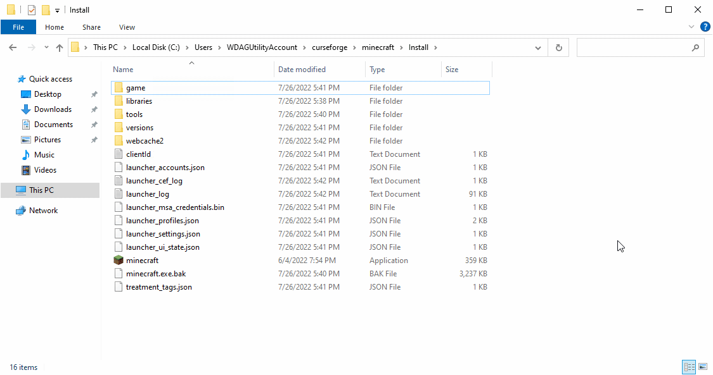
- Delete or rename the existing
minecraft.exefile (e.g. renaming tominecraft.exe.bak). Drag the SKLauncher executable into the directory and rename it tominecraft.exe.
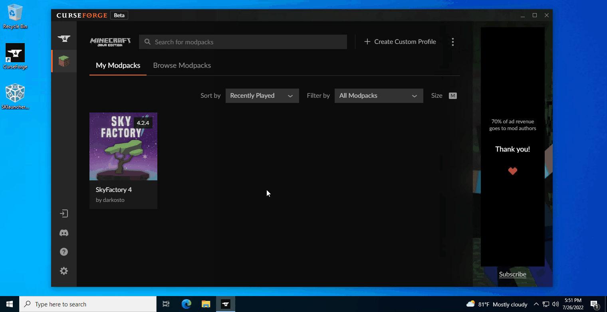
- SKLauncher should now appear instead when you hit Play.
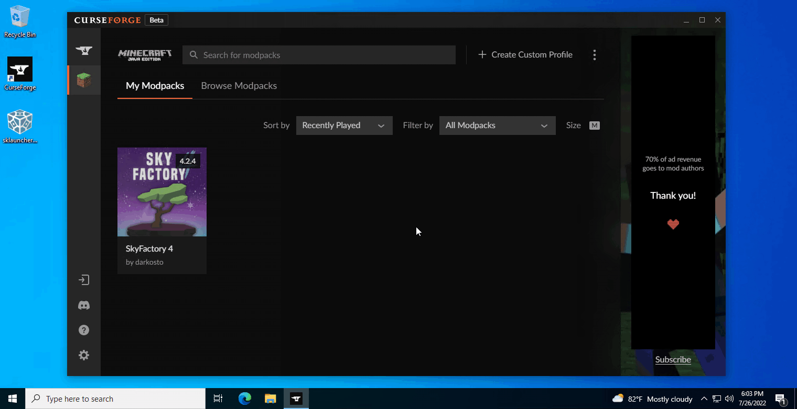
#
Uninstalling Modpacks
- To uninstall a modpack, open the CurseForge app and head to the left sidebar. Select Minecraft > My Modpacks. Click on the modpack > 3 Dots > Delete Profile.
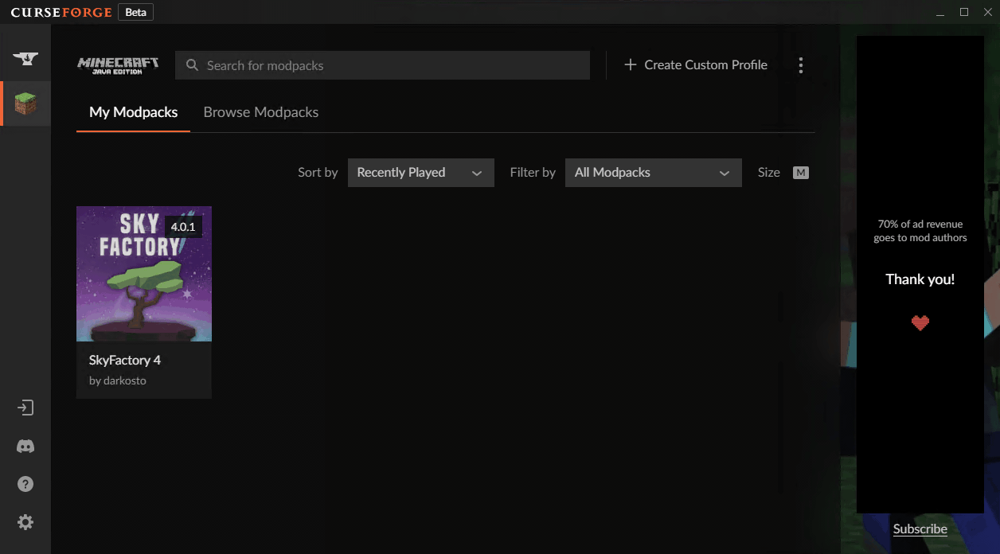